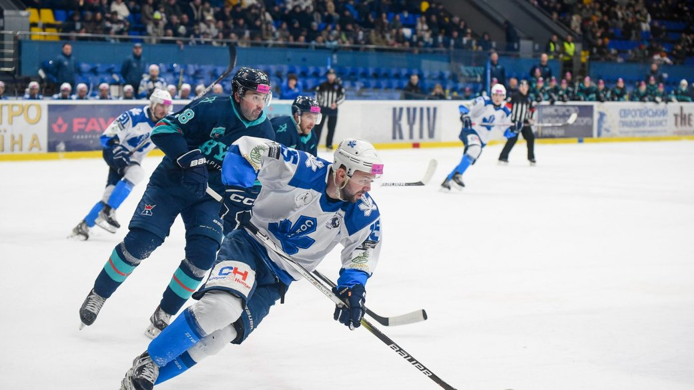
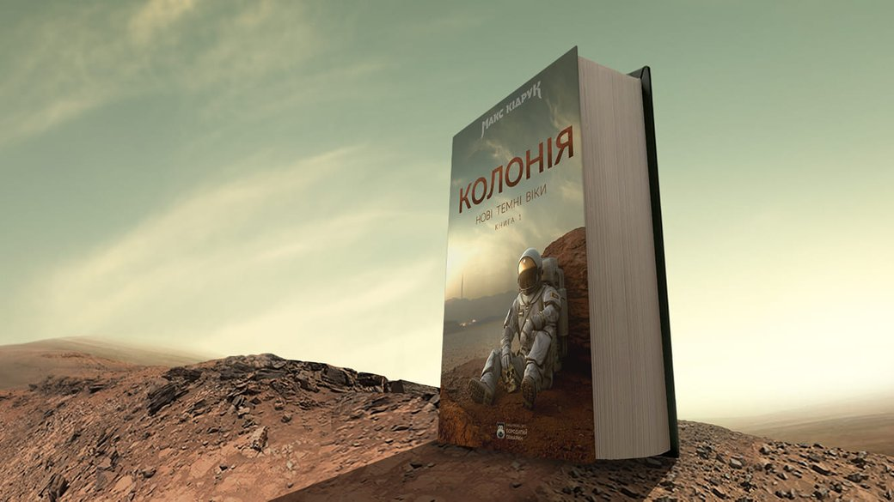
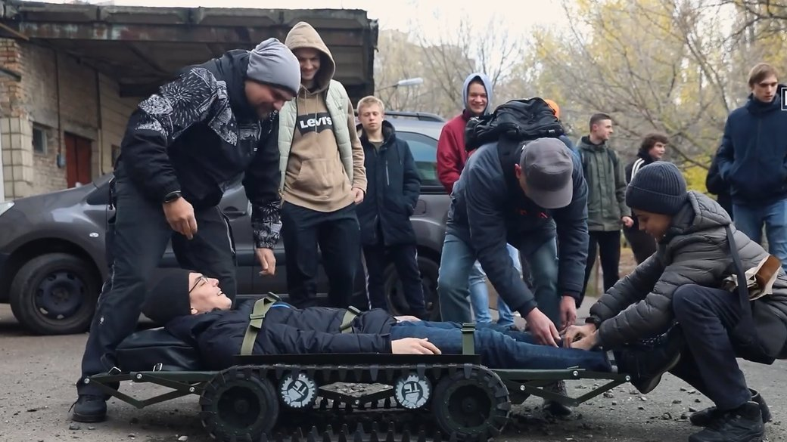
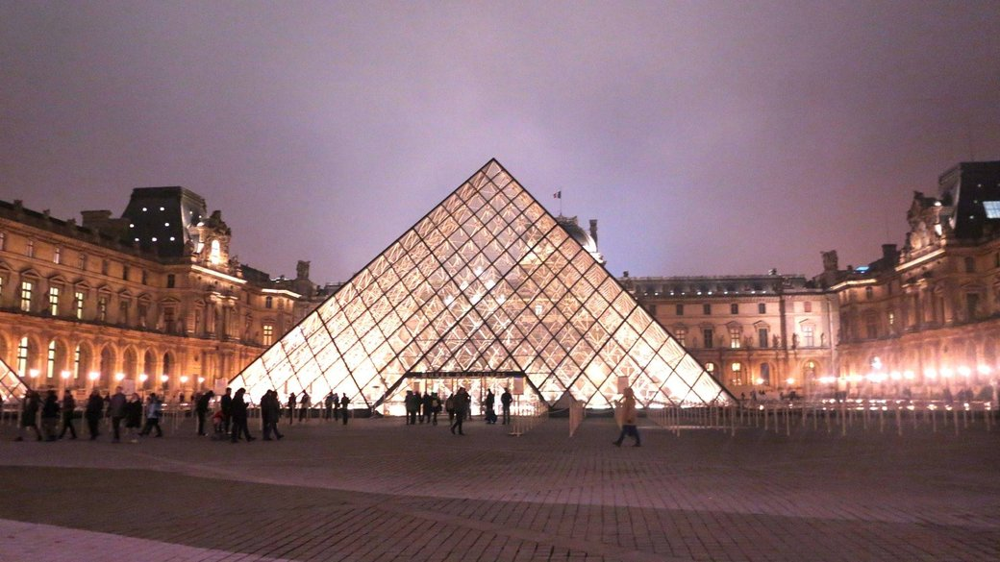
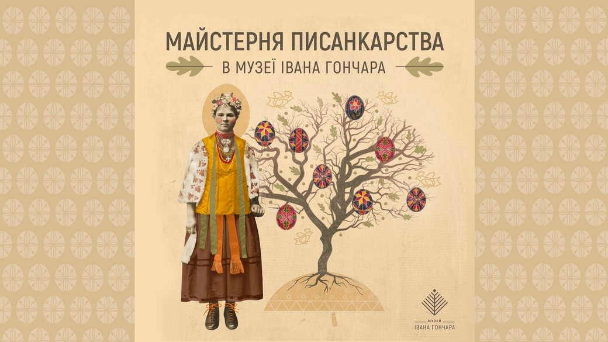
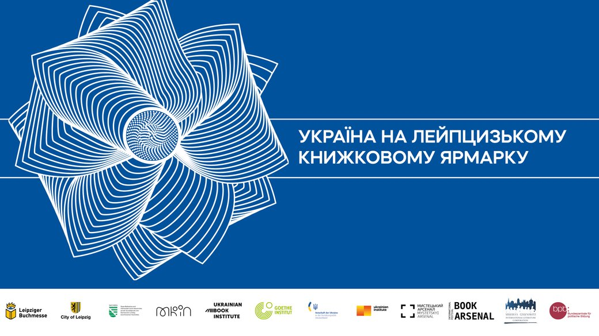

Новини
Головна сторінка
Новини
Фото
Розклад
Останні новини
18 березня, 22:21
Дебютний гол Забарного, рекорди воротарів і "суха" серія Довбика. Як легіонери України підходять до плей-оф відбору Євро
18 березня, 21:03

У чемпіонаті України з хокею серед чоловіків визначились фіналісти: хто розіграє трофей
18 березня, 20:46

25 найпопулярніших українських книжок на Goodreads: перелік
18 березня, 20:29

Студенти КПІ створюють евакуаційні наземні електроноші: що це таке
18 березня, 19:02

Кількість відвідувачів у музеях збільшилась і майже досягла доковідного рівня — The Art Newspaper
18 березня, 18:37

До великодніх свят у Музеї Гончара відкриють майстерню писанкарства
18 березня, 18:01
АПЛ зняла очки з "Ноттінгем Форест" за порушення фінансових правил: як тепер виглядає таблиця англійського чемпіонату
18 березня, 17:57

Україна на Лейпцизькому книжковому ярмарку 2024: деталі участі